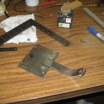
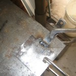
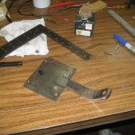
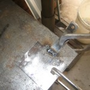
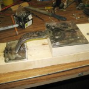
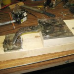
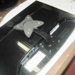
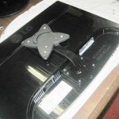

A Bit of the Past is Gone

Down she goes
The end of an era, after standing for over 75 years (maybe 85) the corn silo came down. My Father and Grandfather had it built for the storage of corn silage by the Svea Silo Co. of Svea, Minnesota. It was constructed of pre-stressed concrete blocks called staves. One edge was concave and the opposed edge was convex. They would be set together and steel bands were tightened around the structure to hold it together. A coat of cement was painted on the inside to make it air tight.
 This old photo shows the barn and silo and the last of Dad’s work horses. This probably dates from early 1940′s. Sadly not many photos were taken of farm operations and fewer survived.
This old photo shows the barn and silo and the last of Dad’s work horses. This probably dates from early 1940′s. Sadly not many photos were taken of farm operations and fewer survived.
Green corn was chopped, stalk and all, into inch long pieces and blown into the silo from the top. Many tons of this would pack down into the structure and ferment, thereby preserving the nutrients in the corn.
Back then Dad milked 12 cows or so. The 14 by 36 foot silo was enough to take care of the animals all winter. We would dig it out by hand and carry it to the cows in a bushel basket twice a day.
Dad sold his cows in the early 60′s and the silo went unused. The small family farm was no longer financially viable and by the 70′s it became apparent it never would be again.
The unused barn was disassembled for lumber salvage in the 1970′s and it’s cement floor and foundations buried in the early 90′s. At that time the cost of disposal of the silo far exceeded the gain the additional crop land would return. This year, the higher corn prices, plus the danger of the structure collapsing into a growing crop and the difficulty of the larger farm machinery manoeuvring around the structure, made us move forward.
The traditional way of taking a silo down was to take the steel bands off the bottom. Then take a sledge hammer, break the cement staves out till it starts to fall, then run like hell. I just didn’t like that part about running. My son, Jeremy, came up with the idea of shooting the staves out with a high power rifle. When the crop was out we gathered some spectators and the fun began.
 Here we are getting ready.
Here we are getting ready.
I’m on the left, next is an old friend, Dan Pederson, My sister Margaret (or Peg as I always knew her). Ronna and Dave Gravgard in background.
Jeremy showing his AR15 rifle.

Here is Jeremy with a fresh load of ammunition. Good thing he brought plenty along. It would take many shots to break through. Notice how the staves are shot out more than half way around and the silo is still standing.

 When it went, it went fast and it fell in a different direction than I would have guessed. I’m glad I was clear.
When it went, it went fast and it fell in a different direction than I would have guessed. I’m glad I was clear.
The concrete has gone for recycling. I separated the iron and got it out of the field. next spring I will sell it for scrap Iron, unless I can find someone who needs 5/8 inch steel rod.
I hired a large hoe to bury the foundation. He wasn’t sure when he would get there and I didn’t need to be there. So I just figured I would listen for him and get some pictures. I was working in my shop when I heard him. He was done and loading up again before I walked down to him, so I failed get pictures. The land has been returned to a level field again. In a few years know one will remember it was ever there.


 . Life was a continuous adventure with minimal supervision. I survived the cuts and bruises and gained confidence and respect for danger.
. Life was a continuous adventure with minimal supervision. I survived the cuts and bruises and gained confidence and respect for danger. The finished product
The finished product 
 The captain at the Helm
The captain at the Helm Here Donna and I are on the beach. We really enjoyed the days at Key West. It is very cosmopolitan, museums, art gallery’s, shops, restaurants and open cafes. It reminded me of the way city’s were in the 1950s. The weather was great, with lots of sun shine. The town is full of tourists from all over the world and I really enjoyed visiting with people. My only regret is that I didn’t have my red convertible down there to ride around in.
Here Donna and I are on the beach. We really enjoyed the days at Key West. It is very cosmopolitan, museums, art gallery’s, shops, restaurants and open cafes. It reminded me of the way city’s were in the 1950s. The weather was great, with lots of sun shine. The town is full of tourists from all over the world and I really enjoyed visiting with people. My only regret is that I didn’t have my red convertible down there to ride around in.
") This is the original mount that took up much desk space and was a bit unstable
This is the original mount that took up much desk space and was a bit unstable 

")
 

 


 
